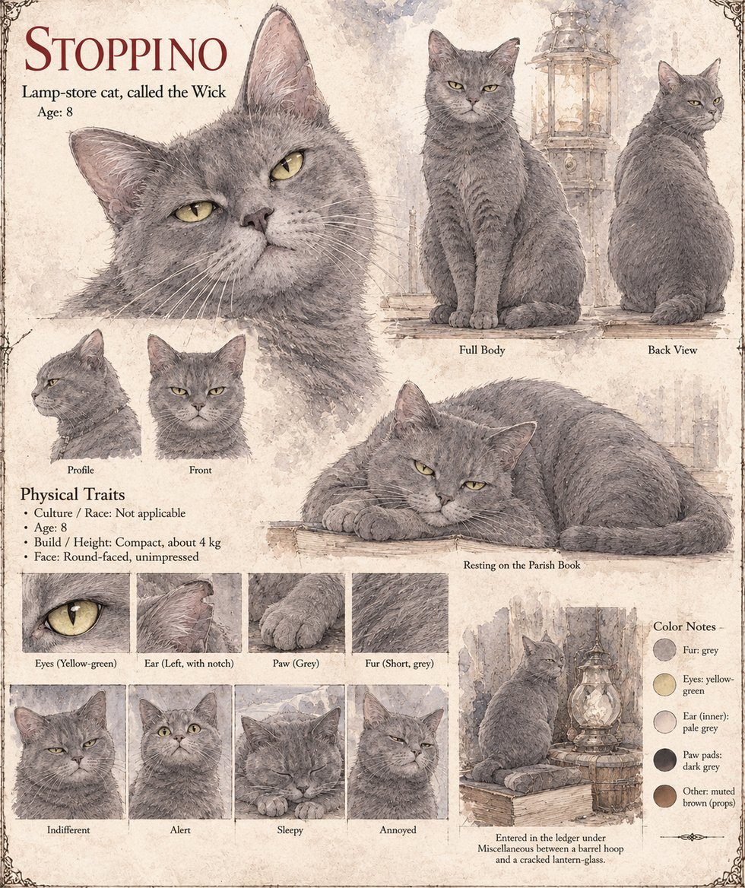

Stoppino
Lamp-store cat, called the Wick · entered in the ledger under Miscellaneous · 8 on the sheet
She lies across the open parish book on the Reckoner’s desk, with the particular majesty of animals that have noticed which pages are warm: a grey lamp-store cat called Stoppino, the Wick, who belongs, so far as anyone has established, to the lamp-store itself and not to Agata, and who has arranged her tenure on the principle that a cat is the only member of any household who has never been asked to be counted. Agata once, as an experiment, entered her under Miscellaneous, between a barrel hoop and a cracked lantern-glass, as an asset of no determinable value. The cat was unmoved, and has stayed in the ledger ever since, the one entry in a parish of twelve hundred souls that nobody has thought to question. She lies across Agata’s feet through the four evenings of the eleven-page inventory.
When Focolare is translated she does not go. Lampwarden Dalla Riva proposes to keep the lamp-store, the Lit Ground and the cat, who had made her own arrangements and had declined with perfect firmness to be put in a basket. In the valley the new lamp-store acquires a cat within the week, a tabby of no provenance, not Stoppino, who was a sandbank away and had presumably made other arrangements. The manuscript does not name her again.
The manuscript gives her colour (grey), her name and its meaning, her place in the ledger and her refusal of the basket; it gives no age, weight, eye colour or markings. The sheet’s age of 8, weight of about 4 kg, round unimpressed face, yellow-green eyes, notched left ear and short grey fur are its own, as are its panels Indifferent, Alert, Sleepy and Annoyed and its view Resting on the Parish Book. Its scene Entered in the ledger under Miscellaneous between a barrel hoop and a cracked lantern-glass. follows the manuscript’s own phrase, drawn with her on a book beside a lantern and a barrel.
“a cat is the only member of any household who has never been asked to be counted”
Appears In

Related Subjects


Related Records

On the nineteenth of Lorren, in the ledger-room above the lamp-store of Focolare, Agata, thirty-four, comes to enter the difference between Souls and Measure and finds that the form did not provide for a surplus. She rules a column herself with her father’s steel straight-edge, heads it Excess and writes beneath it a hundred and fourteen, while Stoppino, the grey lamp-store cat, lies across the open parish book.